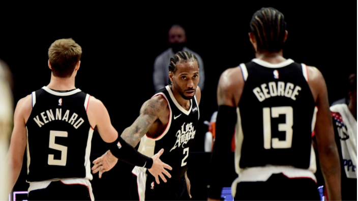

The Outsiders: Looking at the Statistical Outliers of the NBA
By Alon Tamir | May 16, 2021
The NBA is a league of outliers, it’s a group of over 450 players who are on average 6’6 and are the best basketball players in the world. Standing out among a group of standouts is no easy thing. The following group of players, all in their own unique way, find a way to do so.
Matisse Thybulle: The Defensive PlaymakerMatisse Thybulle is an absolute force on the defensive end. Don’t let his 6’5, 200 lb frame deceive you, he will use his 7’0 wingspan to put his hands in places you would never think they could reach. No ball is safe near Matisse, and everytime you turn on a Sixers game it seems like he’s forcing a turnover for his team. To give some statistical perspective for this, he’s averaging 2.9 steals and 2.0 blocks per 36 minutes. Despite being a guard size player, he ranks within the top 20 in the NBA in block percentage. The graph below plotting block percentage vs. steal percentage for the best shot blockers in the league shows how much of an outlier he truly is.
Among players with the best block percentage in the league this season, Matisse’s quick hands stand alone. Using Stathead, we can see that he is only 1 of 4 players in NBA history to play 1000 minutes in a season and maintain a steal percentage of at least 3% and block percentage of at least 4%. Two of those players are Hakeem Olajuwon and David Robinson, and the other is Gerald Wallace, who led the league in the steals that year and would go on to make an All-Defensive First team later in his career. Not bad company at all.
Robin Lopez: Captain HookOutside of his Sideshow Bob hair and his love for beating up mascots, Ro-Lo may not seem like that special of a NBA player. That’s until you see him go to work in the post. Fred Katz and David Aldridge at the Athletic wrote a great article recently where they pointed out that Lopez has been one of the most efficient post players in the NBA this season, scoring 1.24 points per post up, per Synergy Sports. How he’s done it has been a lot of fun to watch, as he’s doing most of it on the back of his trusty hook shot. Courtesy of Stathead, he is only one of the 2 players to have made at least 100 hook shots this season, and that stat becomes more remarkable when you consider how many minutes he’s played.
The graph above demonstrates that Robin’s ratio of hook shots made to minutes played this season has been pretty special. While it may seem silly to say, the numbers don’t lie, Robin Lopez’s hook shot is one of the most unstoppable moves in the NBA.
Nikola Jokić: The Sambor Shuffling SerbianThere are many ways in which Nikola Jokić is an outlier. From the fact that he is currently having one of the best offensive seasons of all time, or that he is about to become the player taken furthest back in the draft to win MVP, or even that he will be the first center since Shaquille O’Neal to win the award. But what makes Nikola stand out more than anything is his generational passing. I am hardly the first person to say this, but Jokić is already the best passing big man of all time, and it’s not even that close. Per Stathead, in terms of assists per minutes played, and among players who had played at least 2000 minutes, he has the first, second, third, and sixth best seasons among big men. When the stat is changed to AST%, he owns the top 5 spots. Not only is the volume of his passing unparalleled among big men, but also the degree of difficulty and versatility of his passing gives him a solid argument of being the best passer in the NBA, regardless of position. The graph below, made using NBA Outer Dimensional, is showing
assists per game divided by the height in inches of each player since the NBA/ABA merger. We can see that Jokić’s passing for his size can only really be compared to players like Magic Johnson, Ben Simmons, or LeBron James, all players who play on the perimeter. Jokić is redefining what it means to be a superstar, and he’s doing it while playing the game his own way.
Draymond Green: Points for Thee, Not for MeWhile we’re on the topic of passing big men, we should talk about Draymond Green. Like Jokić, it’s not just passing ability that makes Draymond an outlier. From his outspoken character off the court to his legendary defense on it, Draymond is one of the most unique players in the NBA. Draymond is currently fifth in the league in assists per game, and while that may not seem that remarkable, it becomes more ridiculous when you consider his position and how much he scores. Below is a graph made using a NBA stats visualizer plotting out NBA players this season based off their points per game vs. assists per game. We can see that
Draymond really is an outlier, and not even just among big men. Virtually no one in today’s NBA puts up high assist numbers while scoring as little as Draymond. When you consider the fact that he is not a guard, this season for him has no historical precedent. Courtesy of Stathead, among non-guards scoring less than 10 points per game, Draymond’s 8.7 APG stands ahead of the pack, with the next closest non-Draymond number coming in at 5.7 APG. While there have been players such as Nate McMillan, Muggsy Bogues, and Mark Jackson who have dished out assists for their teammates at a high rate while scoring very little themselves, all of these players were point guards. What Draymond is doing at his position is unprecedented. One important caveat to make is that I think part of the reason that we’ve seen a lot more of Golden State’s offense run through Draymond recently is because his 3PT% has dropped to 25.2%, and he’s only taking 2.3 3’s per 36 minutes. This is a pretty sharp drop off from the 38.8 3PT% and 3.3 3’s per 36 min in 2015-16, or even the 30.1 3PT% and 4.0 3’s per 36 min he was taking the last year Golden State won a championship. When Draymond is not making, or even taking, 3’s, this means that if he is not involved in the offensive action, then his defender will be sure to drop off and help, which will clog up the paint and make it difficult for Draymond’s teammates to find any space. Golden State also has a general lack of playmaking, so a lot of the playmaking burden has fallen on Draymond. With the asterisk that some of his high passing volume has been through necessity, Draymond Green has turned creating buckets for his teammates while making practically no shots himself into an artform this season.
Zion Williamson: Defend at Your Own RiskRick Carlisle, coach of the Mavericks, described Zion best when he said he is a “Shaquille O’Neal-type force of nature with a point guard skill set”. What this entails is that Zion gets to rim a lot, and when I say a lot I mean basically whenever he wants. While graphs similar to the one below have been made by people such as Seth Partnow at the Athletic, I do think it is cool to look at how much of outlier Zion’s rim pressure is.
The graph above is plotting field goals attempted within 5ft of the basket versus the FG% on those shots, and as you can see, Zion is literally nearly off the chart. Zion’s great touch around the rim should not be underrated either. While this graph may make it seem like his FG% at the rim is nothing special, you need to factor in the volume of rim attempts he’s taking. Since Zion is taking so many more shots at the rim than anyone else, some of those shots will be difficult attempts that no one else would even think to try. Pelicans’ games often involve Zion jumping into three or four defenders while sliding through them in midair and putting up a layup in the process that goes in half of the time. It’s a shame that we won’t see Zion in the playoffs this year, since it would’ve been interesting to see if Zion’s rim attempts would come down in a playoff setting where shots at the rim are harder to come by. The other possibility is that Zion is just such an unstoppable force that no matter the setting, he will find his way to basket.
Joe Ingles: Australia’s Most Efficient ManJoe Ingles is on track to having one of the most efficient shooting seasons by a perimeter player ever. Examining how he’s doing it also sheds a bit of a light onto the evolution of the NBA. True Shooting % has been on the rise the past 15 years, with the league average going from 52.9% in 2005 to a high of 57.1% this current season, via Statmuse. This has come as teams have recognized the value of trying to get as many of their shots as possible at the rim or from 3. Joe Ingles has taken that idea to heart, especially the part about shooting lots of 3’s. He’s taking 72.4% of his shots from 3, and he’s making them at a rate of 47.1%. Right there is most of the analysis. If you’re taking a majority of your shots from 3 and you’re making them at an absurd rate, you’re going to be a very efficient scorer. Pretty simple. To put Ingles into context, I made the graph below using a NBA stats visualizer plotting True Shooting % vs. 3-point attempts per 36 minutes.
As shown in the graph, most of the players in the league with high True Shooting % are big men who are taking practically all of their shots at the rim. Ingles represents a new class of players, ultra-efficient wings who just bomb away from 3. I think the graph below plotting True Shooting % vs. 2-pt attempts per 36 min for the most efficient shooting seasons ever should give some historical context to what Ingles is doing. While what Ingles is doing is pretty special, it’s not without precedent. As you can see, Kyle Korver had a season in 2014-15 very similar to Ingles’, only taking 25.2% of his shots from 2 and making 49.2% of his 3’s. Korver, Ingles, and other
players like them such as Joe Harris and Duncan Robinson I think are only the beginning. More and more we will see role players’ offensive game reduced to primarily taking 3’s, and if they’re gonna make nearly 50% of them, they’ll be right up there with Ingles and Korver in terms of efficiency too.
Bruce Brown: The Guard Playing CenterBruce Brown is 6’4, but I don’t think anyone has told Bruce Brown that. Brown plays like he’s 6’10, and he fulfills a role in the Brooklyn offense that you wouldn’t expect from a guard sized player. According to Synergy Sports, Brown is used as a cutter 24.9% of the time, and is used as a roll man 11.7% of the time. Those are numbers you might expect to see from a center, and they speak to how unique Brown’s role is. Part of the reason Brown plays the role he does is that he’s not a good shooter, he’s shooting 28.6% from 3 on 0.9 attempts per game. Usually a guard not being able to space the floor would make it very tough for him to be in productive lineups. However, because Brooklyn needs Brown’s defense and because they have enough shooting at the other positions to cover for him, Brown is able to be a positive player for them. That being said, what makes Brown truly an outlier is his offensive rebounding. The graph below is plotting Offensive Rebounds vs. Minutes Played for all players 6’4 and under in the NBA this season. No one really comes close to Brown, and it’s no surprise that his ORB% of 9.1% is 2.5% higher than the next biggest number for all players 6’4 and under. As the league has seen more and more big
men play on the perimeter and shoot from 3, Bruce Brown has gone in the opposite direction. He’s a guard that takes on the offensive responsibilities of a center, and no one can say he’s too short to do it.
Los Angeles Clippers: Prolific P I know I said this article was going to be about players, but I’m going to cheat a bit and talk about the Los Angeles Clippers. The Clippers are having one of the most efficient offensive seasons for any team ever, and it’s being done on the back of their elite 3-point shooting. They are currently shooting 41.6% from 3, which would put them in a tie with the 2015-16 Golden State Warriors for the best 3-pt shooting season ever. When you factor in that their free throw percentage is 83.6%, the best mark ever, it becomes even more impressive. The graph below plotting 3P% vs. FT% for the greatest 3-pt shooting teams ever, excluding the years where the 3-pt line was shortened, shows how much of an outlier this Clippers team is.
A crazy stat that encapsulates how good the Clippers have been shooting the ball from deep this season is that they currently have 7 guys who have played more than 500 minutes and are shooting 40% or above from 3. That’s nearly a full rotation of elite 3-pt shooting. According to Synergy Sports, they currently have 9 players in the 70th percentile or above in terms of spot up shooting. That number grows to 10 if you include what DeMarcus Cousins has done for them in a short space of time. While that may seem insane, what’s even more insane is the Clippers aren’t even the most efficient offense in the NBA this season. That would be the Brooklyn Nets. I think that just speaks to the explosion of offense we’ve seen this past few years. Per Stathead, the top 8 offenses of all time in terms of offensive rating have all come in the past two years. This leads to a situation where a team is having a historic season in terms of shooting efficiency, and they’re not even being the most efficient offense in the league.
.gif)